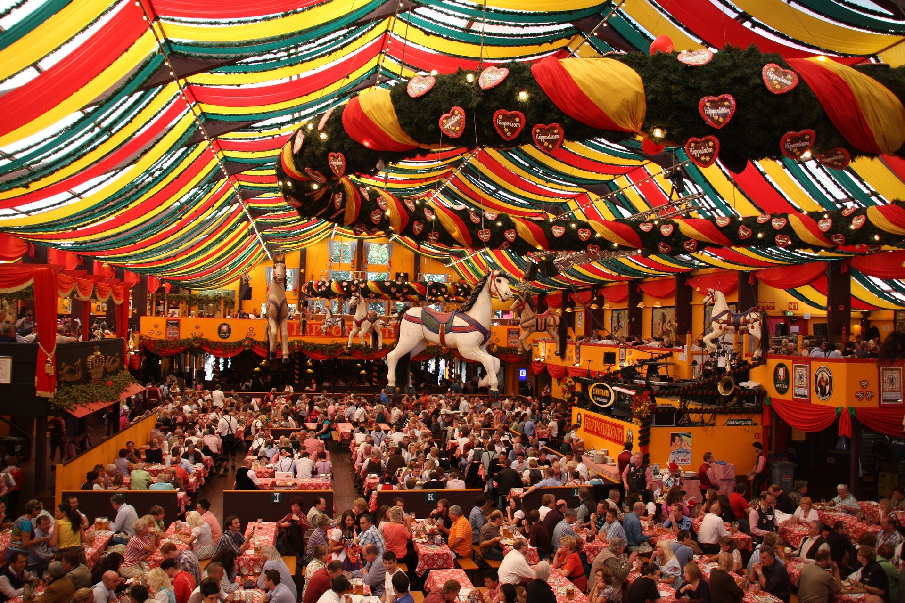

Festivals in Germany
Oktober Fest
The Oktoberfest is the world's largest Volksfest (beer festival and travelling funfair). It is held annually in Munich, Bavaria, Germany. It is a 16 to 18 day folk festival running from mid- or late September to the first Sunday in October, with more than six million people from around the world attending the event every year. Locally, it is called d’Wiesn, after the colloquial name for the fairgrounds, Theresienwiese. The Oktoberfest is an important part of Bavarian culture, having been held since the year 1810. Other cities across the world also hold Oktoberfest celebrations that are modeled after the original Munich event.
During the event, large quantities of Oktoberfest Beer are consumed. During the 16-day festival in 2013, for example, 7.7 million litres were served. Visitors also enjoy numerous attractions, such as amusement rides, sidestalls, and games. There is also a wide variety of traditional foods available.

Outdoor tables in the biergärtens surrounding or adjacent to the big tents are not reserved, and are on a first-come, first-serve basis. It's always polite to ask first - "Ist hier Platz frei?" - when joining a partially -occupied table. Be sure to say "Prost!" when raising your beer on high, saluting your neighbors at the table, and don't forget to return their greeting as well.
Outdoors as well as in, waiters are assigned tables and only your wait person may take your order. Otherwise, go to the self-service counter for beer or food. You may bring your own food to the outdoor biergärtens, but not indoors.